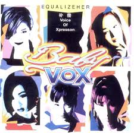
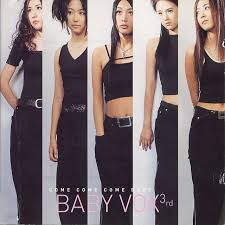
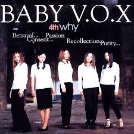
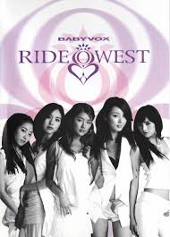

Equalizeher
Baby V.O.X’s debut introduced an R&B and New Jack Swing–influenced sound.
Featuring the original five-member lineup, laying the foundation for the group’s image and vocal style.
Featuring the original five-member lineup, laying the foundation for the group’s image and vocal style.
Baby V.O.X II
Transitional release with major lineup changes.
Lee Gai and Shim Eun Jin joined, shaping Baby V.O.X’s pop identity.
Lee Gai and Shim Eun Jin joined, shaping Baby V.O.X’s pop identity.

Come Come Baby
Yoon Eun Hye officially joined, solidifying the iconic lineup:
Kim EZ, Kan Mi Youn, Lee Hee Jin, Shim Eun Jin, Yoon Eun Hye.
Kim EZ, Kan Mi Youn, Lee Hee Jin, Shim Eun Jin, Yoon Eun Hye.

Why
Released during their commercial peak.
Recognized for strong public acclaim, confident image, and cultural impact.
Recognized for strong public acclaim, confident image, and cultural impact.

Boyish Story
Known for collectible cards inside physical copies.
Musically and visually reflects a confident, youth-oriented image.
Musically and visually reflects a confident, youth-oriented image.
Special Album
A large-scale compilation celebrating peak years.
Includes remixes, unreleased tracks, and ballads, widely considered an official release.
Includes remixes, unreleased tracks, and ballads, widely considered an official release.

Devotion
Stylistic shift toward electronic and dance music.
Showcases a mature, experimental direction distinct from earlier pop sound.
Showcases a mature, experimental direction distinct from earlier pop sound.

Ride West
Western-influenced production packaged in DVD-style case.
Controversial final chapter before disbandment.
Controversial final chapter before disbandment.